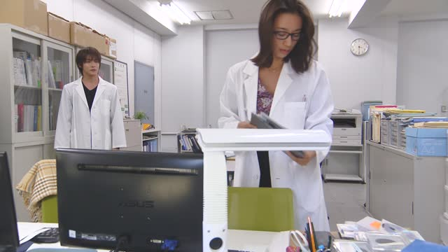
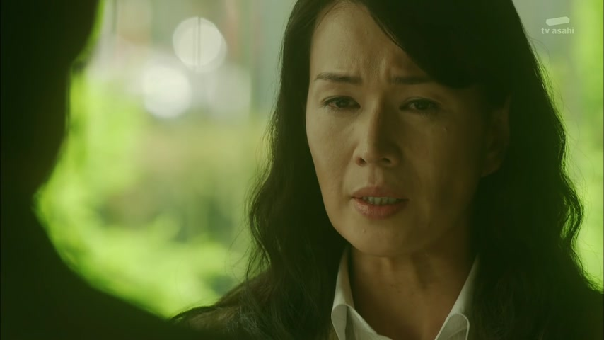

この・その・あの

YouTube · video
この自転車は借りた自転車です。
"This bike is a rented bike."
この, その and あの mean "this ___" or "that ___", and a noun always comes right after: この自転車, その本, あの人. Which one depends on where the thing is: この is near me, その is near you, あの is far from both of us.
On this card, he's sitting on the bike, so it's この自転車. It answers "which bike?": this one, the one I'm on.
They never stand alone. Without a noun you use これ, それ, あれ instead: これは借りた自転車です.
Examples
At a bakery, you point at a bread in the case right in front of you.
このパンをください。
"This bread, please."
Near you: この.
A friend is wearing a jacket you like.
そのジャケット、どこで買ったの？
"Where did you buy that jacket?"
It's on them: その.
You and a friend see a tall tower in the distance.
あのビルは何？
"What's that building?"
Far from both of you: あの.
A friend mentions a ramen place they went to last week.
その店、どこ？
"Where's that place?"
その also points at something the other person just talked about.
With and without
これは高いです。
"This is expensive." これ is the thing itself.
この時計は高いです。
"This watch is expensive." この needs a noun after it.
あれは何？
"What's that?" You don't say what kind of thing.
あの鳥は何？
"What's that bird?" You say which thing: the bird.
Sentence mining

Good Morning Call · Season 2, Episode 9
その実験、手伝わせてもらえませんか？
"Could I help you with that experiment?"
その: the experiment she's working on, on her side.

Border · Episode 1
あの子の靴です。
"They're that kid's shoes."
The kid isn't here, but both of them know who she means: あの.

Pokémon The Series: Indigo League · Episode 4
強敵だぜピジョンあの角に気をつけろ！
"It's a tough one, Pidgeotto. Watch out for those horns!"
The horns are over there on the enemy: あの.

YouTube · video
このさ、砂漠エリアの先ちょっと行ってみる。
"I'm gonna check out a bit past this desert area."
The さ is just a casual pause. It's still この砂漠エリア: the area he's in.

Shirokuma Cafe · Episode 15
この木陰なら涼しいし。
"It's cool in the shade of this tree, so..."
この + noun (木陰, "shade of a tree"). この never stands alone.

Shirokuma Cafe · Episode 16
この店は俺が引き継ぐ！
"I'll take over this shop!"
この + 店 = "this shop", the one they're standing in.
I am Mita, Your Housekeeper · Episode 3
その人に聞けば？
"Why don't you ask that person?"
その人: the person the other one just mentioned.